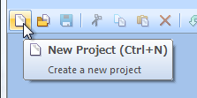
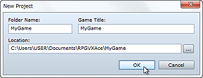

To create a game with this program you must first create a project. A project is a collection of data and resources that constitutes your game. You can even use images and music you created yourself by importing files into your project.
Create projects using the steps below.
Click the New Project button on the toolbar or click File - New Project on the menu bar.
Enter a project name in Folder Name and the game's title in Game Title. The default save location for your project will be displayed in Location. To change it, click the ... button to the right and specify a different location.
Once you have made the aforementioned settings, click the OK button to make a project with the minimal required data for creating your very own game.


If you want to take a break from working on your project and close the program, make sure that you save your project before doing so. Click the Save Project button (or click File - Save Project) to save the project you are currently working on. This overwrites any existing data for the same project.
To resume game creation, click the Open Project button (or click File - Open Project), select the Game (or Game.rvproj2) file in the project folder, and then click the Open button.
Project content is saved all together in the folder you specified at the time you first created it. To back it up, simply copy the entire folder to another hard disk, removable media, and so on. To delete a project you no longer need, simply delete its folder in the usual manner.
The RPGs you create with this program consist of a variety of elements, including graphics displayed on the game screen, player-controlled characters, items and magic, tricks and traps, and the game's story.
These elements are created and organized in three separate data categories: maps (the stage on which the game takes place), events (represents what happens and what can be done in the game), and databases (determines the settings for characters and so on).
There is no set way to go about creating a game. But if this is the first time you are creating a game in RPG Maker, we recommend you start by creating a map. Once you have a map, you can create or use premade events and characters that fit the kind of game you are making.